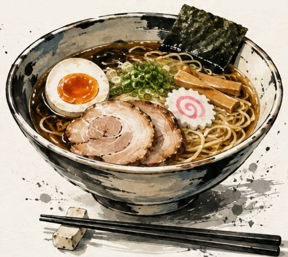

طعم اصیل توکیو در تهران · Authentic Tokyo Ramen
Artisanal Japanese یک کاسه سنت، یک دنیا طعم
رامنهای دستساز با آبگوشت ۱۸ ساعته، سوپهای گرم ژاپنی و افزودنیهای تازه؛ با دستور اصیل سرآشپز، داغ و تازه تا درب منزل شما.
۲۰+
غذای اصیل ژاپنی
۱۸ ساعت
پخت آرام آبگوشت
۴.۹ ★
رضایت مشتریان

拉麺
🔥
سرو داغ و تازه
بستهبندی ایزوله حرارتی
Slurp. Savor. Repeat.
داغ بخورید، با صدا هورت بکشید ♥
ラーメンの心 · PHILOSOPHY
جوهره رامن اصیل
نودل، آبگوشت، افزودنیها و دل. مواد ساده، امکانات بینهایت. ما در ساکورا رامن هر روز آبگوشت را از نو و بهآرامی طی ۱۸ ساعت میپزیم، نودلها را تازه آماده میکنیم و هر کاسه را مثل یک اثر هنری میچینیم.
一
داغ میل کنید
حرارت روح رامن است
二
با صدا هورت بکشید
سنت اصیل ژاپنی
三
لذت هر لقمه
ترکیب اومامی خالص
وجد
Ramen is more
than food.
It's a feeling ♥
آشپزخانه تخصصی رامن و سوپ ژاپنی